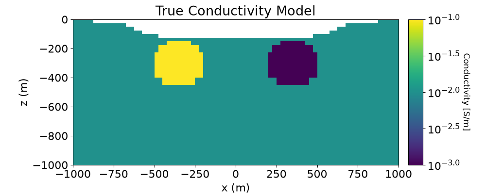
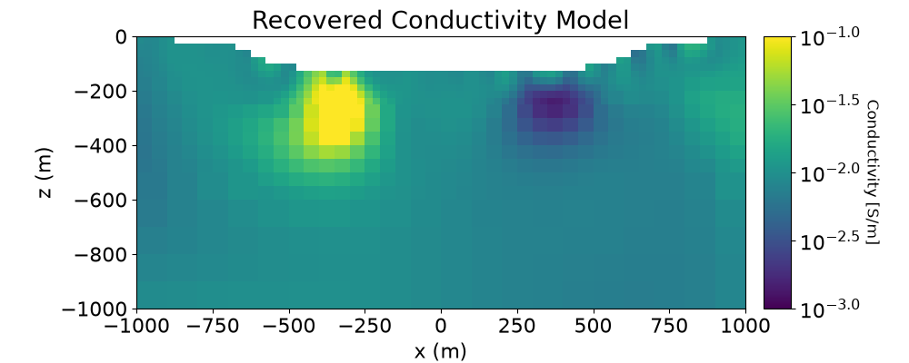
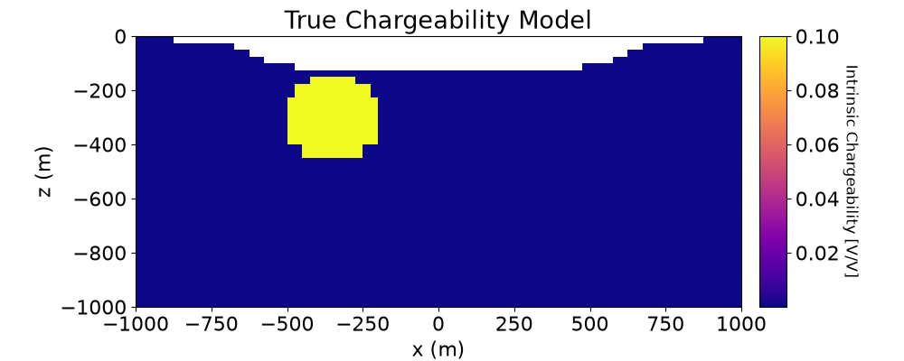
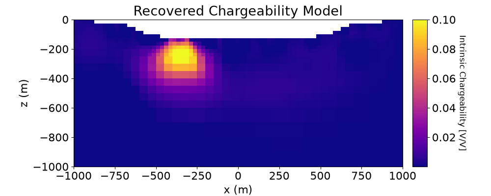

Note
Go to the end to download the full example code.
3D Least-Squares Inversion of DC and IP Data#
Here we invert 5 lines of DC and IP data to recover both an electrical conductivity and a chargeability model. We formulate the corresponding inverse problems as least-squares optimization problems. For this tutorial, we focus on the following:
Generating a mesh based on survey geometry
Including surface topography
Defining the inverse problem (data misfit, regularization, directives)
Applying sensitivity weighting
Plotting the recovered model and data misfit
The DC data are measured voltages normalized by the source current in V/A and the IP data are defined as apparent chargeabilities and V/V.
Import Modules#
import os
import numpy as np
import matplotlib as mpl
import matplotlib.pyplot as plt
import tarfile
from discretize import TreeMesh
from discretize.utils import refine_tree_xyz, active_from_xyz
from simpeg.utils import model_builder
from simpeg.utils.io_utils.io_utils_electromagnetics import read_dcip_xyz
from simpeg import (
maps,
data_misfit,
regularization,
optimization,
inverse_problem,
inversion,
directives,
utils,
)
from simpeg.electromagnetics.static import resistivity as dc
from simpeg.electromagnetics.static import induced_polarization as ip
from simpeg.electromagnetics.static.utils.static_utils import (
apparent_resistivity_from_voltage,
)
# To plot DC/IP data in 3D, the user must have the plotly package
try:
import plotly
from simpeg.electromagnetics.static.utils.static_utils import plot_3d_pseudosection
has_plotly = True
except ImportError:
has_plotly = False
pass
mpl.rcParams.update({"font.size": 16})
# sphinx_gallery_thumbnail_number = 7
Define File Names#
Here we provide the file paths to assets we need to run the inversion. The path to the true model conductivity and chargeability models are also provided for comparison with the inversion results. These files are stored as a tar-file on our google cloud bucket: “https://storage.googleapis.com/simpeg/doc-assets/dcip3d.tar.gz”
# storage bucket where we have the data
data_source = "https://storage.googleapis.com/simpeg/doc-assets/dcip3d.tar.gz"
# download the data
downloaded_data = utils.download(data_source, overwrite=True)
# unzip the tarfile
tar = tarfile.open(downloaded_data, "r")
tar.extractall()
tar.close()
# path to the directory containing our data
dir_path = downloaded_data.split(".")[0] + os.path.sep
# files to work with
topo_filename = dir_path + "topo_xyz.txt"
dc_data_filename = dir_path + "dc_data.xyz"
ip_data_filename = dir_path + "ip_data.xyz"
Downloading https://storage.googleapis.com/simpeg/doc-assets/dcip3d.tar.gz
saved to: /home/vsts/work/1/s/tutorials/06-ip/dcip3d.tar.gz
Download completed!
/home/vsts/work/1/s/tutorials/06-ip/plot_inv_3_dcip3d.py:91: DeprecationWarning: Python 3.14 will, by default, filter extracted tar archives and reject files or modify their metadata. Use the filter argument to control this behavior.
tar.extractall()
Load Data and Topography#
Here we load the observed data and topography.
topo_xyz = np.loadtxt(str(topo_filename))
dc_data = read_dcip_xyz(
dc_data_filename,
"volt",
data_header="V/A",
uncertainties_header="UNCERT",
is_surface_data=False,
)
ip_data = read_dcip_xyz(
ip_data_filename,
"apparent_chargeability",
data_header="APP_CHG",
uncertainties_header="UNCERT",
is_surface_data=False,
)
Plot Observed DC Data in Pseudosection#
Here we plot the observed DC data in 3D pseudosection. To use this utility, you must have Python’s plotly package. Here, we represent the DC data as apparent conductivities.
# Convert predicted data to apparent conductivities
apparent_conductivity = 1 / apparent_resistivity_from_voltage(
dc_data.survey,
dc_data.dobs,
)
if has_plotly:
# Plot DC Data
fig = plot_3d_pseudosection(
dc_data.survey, apparent_conductivity, scale="log", units="S/m"
)
fig.update_layout(
title_text="Apparent Conductivity",
title_x=0.5,
title_font_size=24,
width=650,
height=500,
scene_camera=dict(
center=dict(x=0, y=0, z=-0.4), eye=dict(x=1.5, y=-1.5, z=1.8)
),
)
plotly.io.show(fig)
else:
print("INSTALL 'PLOTLY' TO VISUALIZE 3D PSEUDOSECTIONS")
Plot Observed IP Data in Pseudosection#
Here we plot the observed IP data in 3D pseudosection. To use this utility, you must have Python’s plotly package. Here, we represent the IP data as apparent chargeabilities.
if has_plotly:
# Plot IP Data
fig = plot_3d_pseudosection(
ip_data.survey,
ip_data.dobs,
scale="linear",
units="V/V",
vlim=[0, np.max(ip_data.dobs)],
marker_opts={"colorscale": "plasma"},
)
fig.update_layout(
title_text="Apparent Chargeability",
title_x=0.5,
title_font_size=24,
width=650,
height=500,
scene_camera=dict(
center=dict(x=0, y=0, z=-0.4), eye=dict(x=1.5, y=-1.5, z=1.8)
),
)
plotly.io.show(fig)
else:
print("INSTALL 'PLOTLY' TO VISUALIZE 3D PSEUDOSECTIONS")
Assign Uncertainties#
Inversion with SimPEG requires that we define the uncertainties on our data. This represents our estimate of the standard deviation of the noise in our data. For DC data, the uncertainties are 10% of the absolute value. For IP data, the uncertainties are 5e-3 V/V.
dc_data.standard_deviation = 0.1 * np.abs(dc_data.dobs)
ip_data.standard_deviation = 5e-3 * np.ones_like(ip_data.dobs)
Create Tree Mesh#
Here, we create the Tree mesh that will be used to invert both DC resistivity and IP data.
dh = 25.0 # base cell width
dom_width_x = 6000.0 # domain width x
dom_width_y = 6000.0 # domain width y
dom_width_z = 4000.0 # domain width z
nbcx = 2 ** int(np.round(np.log(dom_width_x / dh) / np.log(2.0))) # num. base cells x
nbcy = 2 ** int(np.round(np.log(dom_width_y / dh) / np.log(2.0))) # num. base cells y
nbcz = 2 ** int(np.round(np.log(dom_width_z / dh) / np.log(2.0))) # num. base cells z
# Define the base mesh
hx = [(dh, nbcx)]
hy = [(dh, nbcy)]
hz = [(dh, nbcz)]
mesh = TreeMesh([hx, hy, hz], x0="CCN")
# Mesh refinement based on topography
k = np.sqrt(np.sum(topo_xyz[:, 0:2] ** 2, axis=1)) < 1200
mesh = refine_tree_xyz(
mesh, topo_xyz[k, :], octree_levels=[0, 6, 8], method="surface", finalize=False
)
# Mesh refinement near sources and receivers.
electrode_locations = np.r_[
dc_data.survey.locations_a,
dc_data.survey.locations_b,
dc_data.survey.locations_m,
dc_data.survey.locations_n,
]
unique_locations = np.unique(electrode_locations, axis=0)
mesh = refine_tree_xyz(
mesh, unique_locations, octree_levels=[4, 6, 4], method="radial", finalize=False
)
# Finalize the mesh
mesh.finalize()
/home/vsts/work/1/s/tutorials/06-ip/plot_inv_3_dcip3d.py:239: FutureWarning: In discretize v1.0 the TreeMesh will change the default value of diagonal_balance to True, which will likely slightly change meshes you have previously created. If you need to keep the current behavior, explicitly set diagonal_balance=False.
mesh = TreeMesh([hx, hy, hz], x0="CCN")
/home/vsts/work/1/s/tutorials/06-ip/plot_inv_3_dcip3d.py:243: DeprecationWarning: The surface option is deprecated as of `0.9.0` please update your code to use the `TreeMesh.refine_surface` functionality. It will be removed in a future version of discretize.
mesh = refine_tree_xyz(
/home/vsts/work/1/s/tutorials/06-ip/plot_inv_3_dcip3d.py:255: DeprecationWarning: The radial option is deprecated as of `0.9.0` please update your code to use the `TreeMesh.refine_points` functionality. It will be removed in a future version of discretize.
mesh = refine_tree_xyz(
Project Electrodes to Discretized Topography#
It is important that electrodes are not modeled as being in the air. Even if the electrodes are properly located along surface topography, they may lie above the discretized topography. This step is carried out to ensure all electrodes lie on the discretized surface.
# Find cells that lie below surface topography
ind_active = active_from_xyz(mesh, topo_xyz)
# Extract survey from data object
dc_survey = dc_data.survey
ip_survey = ip_data.survey
# Shift electrodes to the surface of discretized topography
dc_survey.drape_electrodes_on_topography(mesh, ind_active, option="top")
ip_survey.drape_electrodes_on_topography(mesh, ind_active, option="top")
# Reset survey in data object
dc_data.survey = dc_survey
ip_data.survey = ip_survey
/home/vsts/work/1/s/tutorials/06-ip/plot_inv_3_dcip3d.py:280: FutureWarning: Argument ``option`` is deprecated in favor of ``topo_cell_cutoff`` and will be removed in SimPEG v0.27.0.
dc_survey.drape_electrodes_on_topography(mesh, ind_active, option="top")
/home/vsts/work/1/s/tutorials/06-ip/plot_inv_3_dcip3d.py:281: FutureWarning: Argument ``option`` is deprecated in favor of ``topo_cell_cutoff`` and will be removed in SimPEG v0.27.0.
ip_survey.drape_electrodes_on_topography(mesh, ind_active, option="top")
Starting/Reference Model and Mapping on OcTree Mesh#
Here, we create starting and/or reference models for the DC inversion as well as the mapping from the model space to the active cells. Starting and reference models can be a constant background value or contain a-priori structures. Here, the starting model is the natural log of 0.01 S/m.
# Define conductivity model in S/m (or resistivity model in Ohm m)
air_conductivity = np.log(1e-8)
background_conductivity = np.log(1e-2)
# Define the mapping from active cells to the entire domain
active_map = maps.InjectActiveCells(mesh, ind_active, np.exp(air_conductivity))
nC = int(ind_active.sum())
# Define the mapping from the model to the conductivity of the entire domain
conductivity_map = active_map * maps.ExpMap()
# Define starting model
starting_conductivity_model = background_conductivity * np.ones(nC)
Define the Physics of the DC Simulation#
Here, we define the physics of the DC resistivity simulation.
dc_simulation = dc.Simulation3DNodal(
mesh, survey=dc_survey, sigmaMap=conductivity_map, storeJ=True
)
Define DC Inverse Problem#
The inverse problem is defined by 3 things:
Data Misfit: a measure of how well our recovered model explains the field data
Regularization: constraints placed on the recovered model and a priori information
Optimization: the numerical approach used to solve the inverse problem
# Define the data misfit. Here the data misfit is the L2 norm of the weighted
# residual between the observed data and the data predicted for a given model.
# Within the data misfit, the residual between predicted and observed data are
# normalized by the data's standard deviation.
dc_data_misfit = data_misfit.L2DataMisfit(data=dc_data, simulation=dc_simulation)
# Define the regularization (model objective function)
dc_regularization = regularization.WeightedLeastSquares(
mesh,
active_cells=ind_active,
reference_model=starting_conductivity_model,
)
dc_regularization.reference_model_in_smooth = (
True # Include reference model in smoothness
)
# Define how the optimization problem is solved.
dc_optimization = optimization.InexactGaussNewton(
maxIter=15, cg_maxiter=30, cg_rtol=1e-2
)
# Here we define the inverse problem that is to be solved
dc_inverse_problem = inverse_problem.BaseInvProblem(
dc_data_misfit, dc_regularization, dc_optimization
)
Define DC Inversion Directives#
Here we define any directives that are carried out during the inversion. This includes the cooling schedule for the trade-off parameter (beta), stopping criteria for the inversion and saving inversion results at each iteration.
# Apply and update sensitivity weighting as the model updates
update_sensitivity_weighting = directives.UpdateSensitivityWeights()
# Defining a starting value for the trade-off parameter (beta) between the data
# misfit and the regularization.
starting_beta = directives.BetaEstimate_ByEig(beta0_ratio=1e1)
# Set the rate of reduction in trade-off parameter (beta) each time the
# the inverse problem is solved. And set the number of Gauss-Newton iterations
# for each trade-off paramter value.
beta_schedule = directives.BetaSchedule(coolingFactor=2.5, coolingRate=2)
# Options for outputting recovered models and predicted data for each beta.
save_iteration = directives.SaveOutputEveryIteration(save_txt=False)
# Setting a stopping criteria for the inversion.
target_misfit = directives.TargetMisfit(chifact=1)
# Apply and update preconditioner as the model updates
update_jacobi = directives.UpdatePreconditioner()
directives_list = [
update_sensitivity_weighting,
starting_beta,
beta_schedule,
save_iteration,
target_misfit,
update_jacobi,
]
/home/vsts/work/1/s/simpeg/directives/_directives.py:1865: FutureWarning: SaveEveryIteration.save_txt has been deprecated, please use SaveEveryIteration.on_disk. It will be removed in version 0.26.0 of SimPEG.
self.save_txt = save_txt
/home/vsts/work/1/s/simpeg/directives/_directives.py:1866: FutureWarning: SaveEveryIteration.save_txt has been deprecated, please use SaveEveryIteration.on_disk. It will be removed in version 0.26.0 of SimPEG.
on_disk = self.save_txt
Running the DC Inversion#
To define the inversion object, we need to define the inversion problem and the set of directives. We can then run the inversion.
# Here we combine the inverse problem and the set of directives
dc_inversion = inversion.BaseInversion(
dc_inverse_problem, directiveList=directives_list
)
# Run inversion
recovered_conductivity_model = dc_inversion.run(starting_conductivity_model)
Running inversion with SimPEG v0.25.2.dev29+g5b53e8cb7
============================ Inexact Gauss Newton ============================
# beta phi_d phi_m f |proj(x-g)-x| LS Comment
-----------------------------------------------------------------------------
0 3.81e-02 4.29e+04 0.00e+00 4.29e+04
1 3.81e-02 1.18e+04 2.35e+05 2.07e+04 4.82e+03 0
2 3.81e-02 1.27e+04 2.05e+05 2.06e+04 2.84e+02 0
3 1.52e-02 6.25e+03 4.88e+05 1.37e+04 1.07e+03 0
4 1.52e-02 6.98e+03 4.36e+05 1.36e+04 1.58e+02 0
5 6.09e-03 2.99e+03 8.56e+05 8.21e+03 6.66e+02 0
6 6.09e-03 3.30e+03 7.99e+05 8.17e+03 8.64e+01 0
7 2.44e-03 1.26e+03 1.32e+06 4.48e+03 3.83e+02 0
8 2.44e-03 1.37e+03 1.27e+06 4.46e+03 4.34e+01 0
9 9.75e-04 4.89e+02 1.82e+06 2.27e+03 2.07e+02 0
10 9.75e-04 5.22e+02 1.78e+06 2.26e+03 2.08e+01 0
11 3.90e-04 1.83e+02 2.30e+06 1.08e+03 1.05e+02 0
------------------------- STOP! -------------------------
1 : |fc-fOld| = 1.3435e+02 <= tolF*(1+|f0|) = 4.2936e+03
1 : |xc-x_last| = 2.0742e+01 <= tolX*(1+|x0|) = 8.6952e+01
0 : |proj(x-g)-x| = 1.0541e+02 <= tolG = 1.0000e-01
0 : |proj(x-g)-x| = 1.0541e+02 <= 1e3*eps = 1.0000e-02
0 : maxIter = 15 <= iter = 11
------------------------- DONE! -------------------------
Recreate True Conductivity Model#
background_value = 1e-2
conductor_value = 1e-1
resistor_value = 1e-3
true_conductivity_model = background_value * np.ones(nC)
ind_conductor = model_builder.get_indices_sphere(
np.r_[-350.0, 0.0, -300.0], 160.0, mesh.cell_centers[ind_active, :]
)
true_conductivity_model[ind_conductor] = conductor_value
ind_resistor = model_builder.get_indices_sphere(
np.r_[350.0, 0.0, -300.0], 160.0, mesh.cell_centers[ind_active, :]
)
true_conductivity_model[ind_resistor] = resistor_value
true_conductivity_model_log10 = np.log10(true_conductivity_model)
Plotting True and Recovered Conductivity Model#
# Plot True Model
fig = plt.figure(figsize=(10, 4))
plotting_map = maps.InjectActiveCells(mesh, ind_active, np.nan)
ax1 = fig.add_axes([0.15, 0.15, 0.67, 0.75])
mesh.plot_slice(
plotting_map * true_conductivity_model_log10,
ax=ax1,
normal="Y",
ind=int(len(mesh.h[1]) / 2),
grid=False,
clim=(true_conductivity_model_log10.min(), true_conductivity_model_log10.max()),
pcolor_opts={"cmap": mpl.cm.viridis},
)
ax1.set_title("True Conductivity Model")
ax1.set_xlabel("x (m)")
ax1.set_ylabel("z (m)")
ax1.set_xlim([-1000, 1000])
ax1.set_ylim([-1000, 0])
ax2 = fig.add_axes([0.84, 0.15, 0.03, 0.75])
norm = mpl.colors.Normalize(
vmin=true_conductivity_model_log10.min(), vmax=true_conductivity_model_log10.max()
)
cbar = mpl.colorbar.ColorbarBase(
ax2, cmap=mpl.cm.viridis, norm=norm, orientation="vertical", format="$10^{%.1f}$"
)
cbar.set_label("Conductivity [S/m]", rotation=270, labelpad=15, size=12)
# Plot recovered model
recovered_conductivity_model_log10 = np.log10(np.exp(recovered_conductivity_model))
fig = plt.figure(figsize=(10, 4))
ax1 = fig.add_axes([0.15, 0.15, 0.67, 0.75])
mesh.plot_slice(
plotting_map * recovered_conductivity_model_log10,
ax=ax1,
normal="Y",
ind=int(len(mesh.h[1]) / 2),
grid=False,
clim=(true_conductivity_model_log10.min(), true_conductivity_model_log10.max()),
pcolor_opts={"cmap": mpl.cm.viridis},
)
ax1.set_title("Recovered Conductivity Model")
ax1.set_xlabel("x (m)")
ax1.set_ylabel("z (m)")
ax1.set_xlim([-1000, 1000])
ax1.set_ylim([-1000, 0])
ax2 = fig.add_axes([0.84, 0.15, 0.03, 0.75])
norm = mpl.colors.Normalize(
vmin=true_conductivity_model_log10.min(), vmax=true_conductivity_model_log10.max()
)
cbar = mpl.colorbar.ColorbarBase(
ax2, cmap=mpl.cm.viridis, norm=norm, orientation="vertical", format="$10^{%.1f}$"
)
cbar.set_label("Conductivity [S/m]", rotation=270, labelpad=15, size=12)
plt.show()


Plotting Normalized Data Misfit or Predicted DC Data#
To see how well the recovered model reproduces the observed data, it is a good idea to compare the predicted and observed data. Here, we accomplish this by plotting the normalized misfit.
# Predicted data from recovered model
dpred_dc = dc_inverse_problem.dpred
# Compute the normalized data misfit
dc_normalized_misfit = (dc_data.dobs - dpred_dc) / dc_data.standard_deviation
if has_plotly:
# Plot IP Data
fig = plot_3d_pseudosection(
dc_data.survey,
dc_normalized_misfit,
scale="linear",
units="",
vlim=[-2, 2],
plane_distance=15,
)
fig.update_layout(
title_text="Normalized Data Misfit",
title_x=0.5,
title_font_size=24,
width=650,
height=500,
scene_camera=dict(
center=dict(x=0, y=0, z=-0.4), eye=dict(x=1.5, y=-1.5, z=1.8)
),
)
plotly.io.show(fig)
else:
print("INSTALL 'PLOTLY' TO VISUALIZE 3D PSEUDOSECTIONS")
Starting/Reference Model for IP Inversion#
Here, we would create starting and/or reference models for the IP inversion as well as the mapping from the model space to the active cells. Starting and reference models can be a constant background value or contain a-priori structures. Here, the starting model is the 1e-6 V/V.
# Define chargeability model in V/V
air_chargeability = 0.0
background_chargeability = 1e-6
active_map = maps.InjectActiveCells(mesh, ind_active, air_chargeability)
nC = int(ind_active.sum())
chargeability_map = active_map
# Define starting model
starting_chargeability_model = background_chargeability * np.ones(nC)
Define the Physics of the IP Simulation#
Here, we define the physics of the IP problem. For the chargeability, we require a mapping from the model space to the entire mesh. For the background conductivity/resistivity, we require the conductivity/resistivity on the entire mesh.
ip_simulation = ip.Simulation3DNodal(
mesh,
survey=ip_survey,
etaMap=chargeability_map,
sigma=conductivity_map * recovered_conductivity_model,
storeJ=True,
)
Define IP Inverse Problem#
Here we define the inverse problem in the same manner as the DC inverse problem.
# Define the data misfit (Here we use weighted L2-norm)
ip_data_misfit = data_misfit.L2DataMisfit(data=ip_data, simulation=ip_simulation)
# Define the regularization (model objective function)
ip_regularization = regularization.WeightedLeastSquares(
mesh,
active_cells=ind_active,
mapping=maps.IdentityMap(nP=nC),
alpha_s=0.01,
alpha_x=1,
alpha_y=1,
alpha_z=1,
)
# Define how the optimization problem is solved.
ip_optimization = optimization.ProjectedGNCG(
maxIter=15, lower=0.0, upper=10, cg_maxiter=30, cg_rtol=1e-3
)
# Here we define the inverse problem that is to be solved
ip_inverse_problem = inverse_problem.BaseInvProblem(
ip_data_misfit, ip_regularization, ip_optimization
)
Define IP Inversion Directives#
Here we define the directives in the same manner as the DC inverse problem.
update_sensitivity_weighting = directives.UpdateSensitivityWeights(threshold_value=1e-3)
starting_beta = directives.BetaEstimate_ByEig(beta0_ratio=1e2)
beta_schedule = directives.BetaSchedule(coolingFactor=2.5, coolingRate=1)
save_iteration = directives.SaveOutputEveryIteration(save_txt=False)
target_misfit = directives.TargetMisfit(chifact=1.0)
update_jacobi = directives.UpdatePreconditioner()
directives_list = [
update_sensitivity_weighting,
starting_beta,
beta_schedule,
save_iteration,
target_misfit,
update_jacobi,
]
/home/vsts/work/1/s/simpeg/directives/_directives.py:1865: FutureWarning: SaveEveryIteration.save_txt has been deprecated, please use SaveEveryIteration.on_disk. It will be removed in version 0.26.0 of SimPEG.
self.save_txt = save_txt
/home/vsts/work/1/s/simpeg/directives/_directives.py:1866: FutureWarning: SaveEveryIteration.save_txt has been deprecated, please use SaveEveryIteration.on_disk. It will be removed in version 0.26.0 of SimPEG.
on_disk = self.save_txt
Running the IP Inversion#
# Here we combine the inverse problem and the set of directives
ip_inversion = inversion.BaseInversion(
ip_inverse_problem, directiveList=directives_list
)
# Run inversion
recovered_chargeability_model = ip_inversion.run(starting_chargeability_model)
Running inversion with SimPEG v0.25.2.dev29+g5b53e8cb7
================================================= Projected GNCG =================================================
# beta phi_d phi_m f |proj(x-g)-x| LS iter_CG CG |Ax-b|/|b| CG |Ax-b| Comment
-----------------------------------------------------------------------------------------------------------------
0 2.24e+01 7.47e+03 0.00e+00 7.47e+03 0 inf inf
1 2.24e+01 2.09e+02 2.83e+01 8.42e+02 9.87e+02 0 10 8.56e-04 1.14e+01
------------------------- STOP! -------------------------
0 : |fc-fOld| = 6.6261e+03 <= tolF*(1+|f0|) = 7.4694e+02
0 : |xc-x_last| = 1.4515e+00 <= tolX*(1+|x0|) = 1.0002e-01
0 : |proj(x-g)-x| = 9.8726e+02 <= tolG = 1.0000e-01
0 : |proj(x-g)-x| = 9.8726e+02 <= 1e3*eps = 1.0000e-02
0 : maxIter = 15 <= iter = 1
------------------------- DONE! -------------------------
Recreate True Chargeability Model#
background_value = 1e-6
chargeable_value = 1e-1
true_chargeability_model = background_value * np.ones(nC)
ind_chargeable = model_builder.get_indices_sphere(
np.r_[-350.0, 0.0, -300.0], 160.0, mesh.cell_centers[ind_active, :]
)
true_chargeability_model[ind_chargeable] = chargeable_value
Plot True and Recovered Chargeability Model#
# Plot True Model
fig = plt.figure(figsize=(10, 4))
plotting_map = maps.InjectActiveCells(mesh, ind_active, np.nan)
ax1 = fig.add_axes([0.15, 0.15, 0.67, 0.75])
mesh.plot_slice(
plotting_map * true_chargeability_model,
ax=ax1,
normal="Y",
ind=int(len(mesh.h[1]) / 2),
grid=False,
clim=(true_chargeability_model.min(), true_chargeability_model.max()),
pcolor_opts={"cmap": mpl.cm.plasma},
)
ax1.set_title("True Chargeability Model")
ax1.set_xlabel("x (m)")
ax1.set_ylabel("z (m)")
ax1.set_xlim([-1000, 1000])
ax1.set_ylim([-1000, 0])
ax2 = fig.add_axes([0.84, 0.15, 0.03, 0.75])
norm = mpl.colors.Normalize(
vmin=true_chargeability_model.min(), vmax=true_chargeability_model.max()
)
cbar = mpl.colorbar.ColorbarBase(
ax2, cmap=mpl.cm.plasma, norm=norm, orientation="vertical", format="%.2f"
)
cbar.set_label("Intrinsic Chargeability [V/V]", rotation=270, labelpad=15, size=12)
# Plot Recovered Model
fig = plt.figure(figsize=(10, 4))
ax1 = fig.add_axes([0.15, 0.15, 0.67, 0.75])
mesh.plot_slice(
plotting_map * recovered_chargeability_model,
ax=ax1,
normal="Y",
ind=int(len(mesh.h[1]) / 2),
grid=False,
clim=(true_chargeability_model.min(), true_chargeability_model.max()),
pcolor_opts={"cmap": mpl.cm.plasma},
)
ax1.set_title("Recovered Chargeability Model")
ax1.set_xlabel("x (m)")
ax1.set_ylabel("z (m)")
ax1.set_xlim([-1000, 1000])
ax1.set_ylim([-1000, 0])
ax2 = fig.add_axes([0.84, 0.15, 0.03, 0.75])
norm = mpl.colors.Normalize(
vmin=true_chargeability_model.min(), vmax=true_chargeability_model.max()
)
cbar = mpl.colorbar.ColorbarBase(
ax2, cmap=mpl.cm.plasma, norm=norm, orientation="vertical", format="%.2f"
)
cbar.set_label("Intrinsic Chargeability [V/V]", rotation=270, labelpad=15, size=12)
plt.show()


Plotting Normalized Data Misfit or Predicted IP Data#
# Predicted data from recovered model
dpred_ip = ip_inverse_problem.dpred
# Normalized misfit
ip_normalized_misfit = (ip_data.dobs - dpred_ip) / ip_data.standard_deviation
if has_plotly:
fig = plot_3d_pseudosection(
ip_data.survey,
ip_normalized_misfit,
scale="linear",
units="",
vlim=[-2, 2],
plane_distance=15,
marker_opts={"colorscale": "plasma"},
)
fig.update_layout(
title_text="Normalized Data Misfit",
title_x=0.5,
title_font_size=24,
width=650,
height=500,
scene_camera=dict(
center=dict(x=0, y=0, z=-0.4), eye=dict(x=1.5, y=-1.5, z=1.8)
),
)
plotly.io.show(fig)
else:
print("INSTALL 'PLOTLY' TO VISUALIZE 3D PSEUDOSECTIONS")
Total running time of the script: (2 minutes 43.075 seconds)
Estimated memory usage: 516 MB